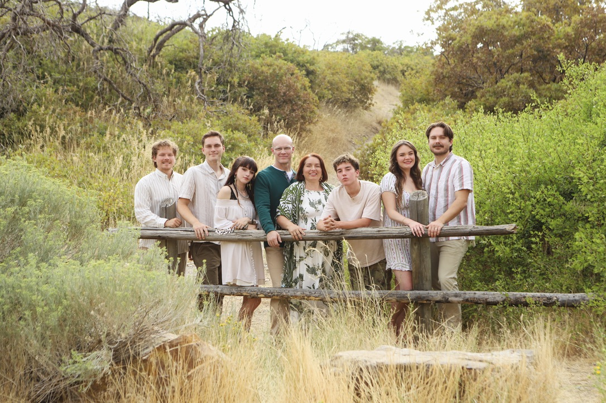

I’m a deeply compassionate and highly skilled therapist who uses proven approaches to help adults heal from anxiety, trauma, and depression, and to significantly reduce symptoms of OCD, bipolar disorder, and schizophrenia.
I help adults with depression, anxiety, trauma/PTSD, OCD, relationship distress, bipolar disorder, grief, sczhizophrenia, and substance use concerns.
No matter how hard things are for you right now, I am confident I can help you on your healing journey. I love working with adults of all ages, including senior citizens, and I strive to provide a calm, safe, accepting, and growth-oriented space.
I came to the United States as a refugee from Poland during the Cold War. In my first years in America, I lived in abject poverty and experienced a variety of traumatic events. Those experiences shaped my deep empathy for people who suffer. After a long healing journey of my own, I chose to become a therapist to help others.
I earned my master’s degree in social work from Utah Valley University. I have a special fondness and empathy for the most vulnerable and marginalized people in our community. I focus on helping people heal by addressing traumatic experiences, increasing self-compassion, and teaching practical skills to cope with everyday stressors.
I am married and have five children. I have two Australian Cattle Dogs and I foster and rehome other heelers. My hobbies include hiking, reading, gardening, nature photography, and spending time with friends and family.

Sylwia with her family in Orem, Utah
Phone: (801) 800-1700
Email: sylwia@happyvalleycounselingutah.com
Address: 532 E 800 N, Orem, UT 84097